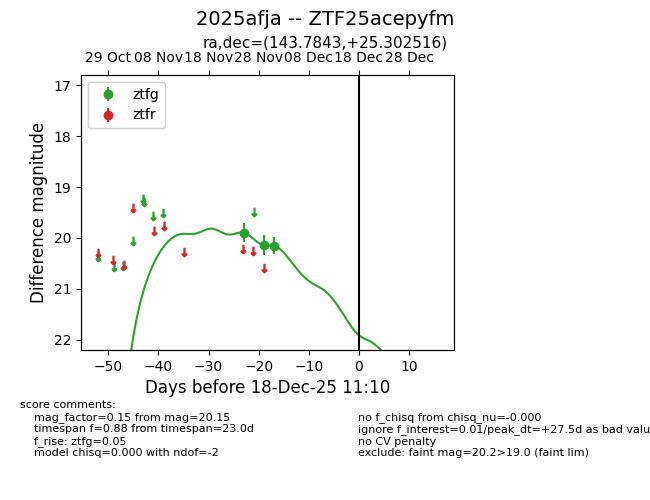
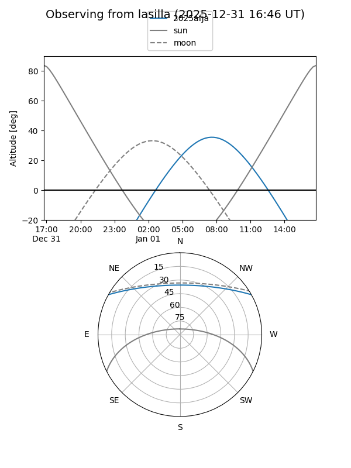
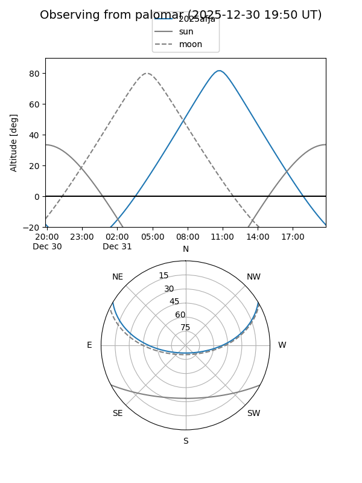
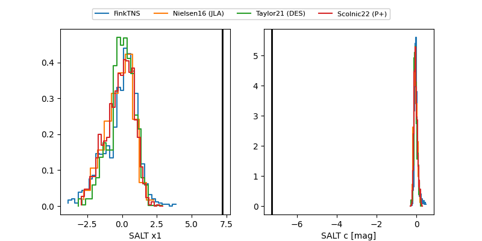

2025afja
Target 2025afja at 2025-12-31 17:59
Aliases and brokers:
FINK: link
Lasair: link
ALeRCE: link
TNS: link
YSE: link
alt names
ZTF25acepyfm (ztf,fink_ztf)
2025afja (tns,yse)
Coordinates:
equatorial (ra, dec) = 143.7843,+25.30252
equatorial (HMS+DMS) = 09:35:08.22,+25:18:09.06
galactic (l, b) = (203.7565,+46.21635)
Flags:
Photometry:
last ztfg=20.15
3 ztfg detections
Lightcurve

Visibility


Additional plots
